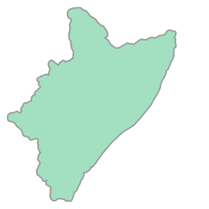
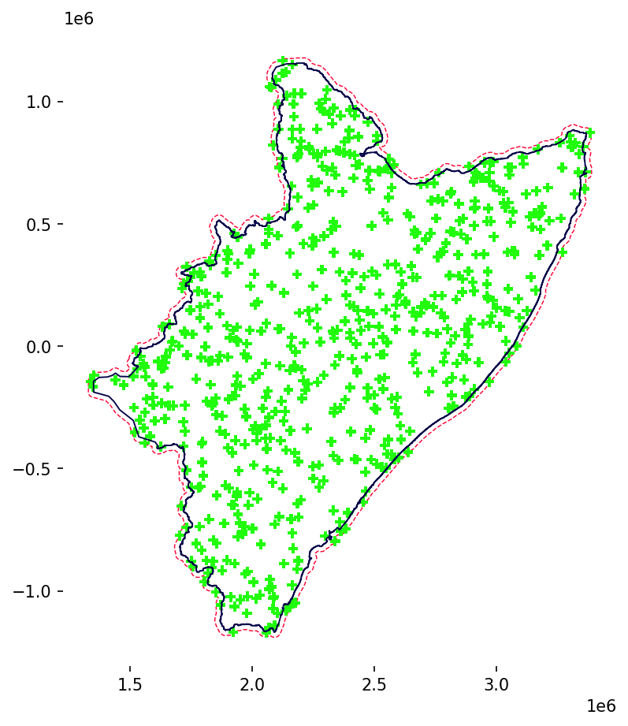
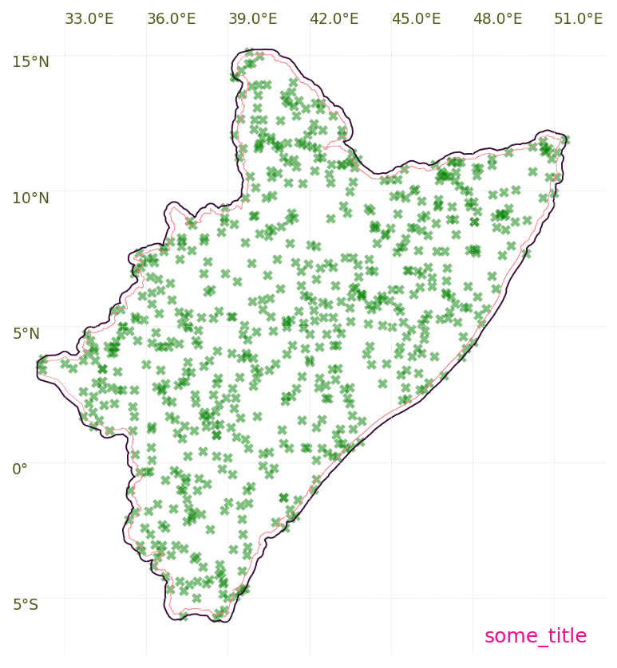

SAMPLING STORM CENTERS
Objectives:
Getting a grip on the spatial sampling of storm centres
STORM samples storm centres following the complete spatial randomness (CSR) framework implemented throughout the Pointpats library. Please check out the aforementioned reference, which offers more in-depth mathematical details. For now, suffice to say that the approach presented below allows a faster generation of random samples following a Poisson (Point) Process inside a (delimited) region (e.g., \(\lambda\)-conditioned CSR, where \(\lambda\) represents the intensity of events).
Note: Unlike the PDF-parameterization shown in notebook one_, the spatial parameters/constants displayed here do represent the HAD (Horn-of-Africa Drylands).
Most of the variables shown in caps (constraining the modeling and performance of STORM) can be found and set up in the parameters.py module.
The sampling and processing of storm centres is done by STORM through the functions: SCENTRES, SHP_REGION, and SHP_REGION_GRID of the rainfall.py module.
STORM PARAMETERS
[43]:
# catchment shape-file in WGS84
SHP_FILE = "../model_input/HAD_basin.shp"
BUFFER = 21097.5 # in meters! -> buffer distance (out of the HAD)
# OGC-WKT for HAD [taken from https://epsg.io/42106]
WKT_OGC = (
'PROJCS["WGS84_/_Lambert_Azim_Mozambique",'
'GEOGCS["unknown",'
'DATUM["unknown",'
'SPHEROID["Normal Sphere (r=6370997)",6370997,0]],'
'PRIMEM["Greenwich",0,'
'AUTHORITY["EPSG","8901"]],'
'UNIT["degree",0.0174532925199433,'
'AUTHORITY["EPSG","9122"]]],'
'PROJECTION["Lambert_Azimuthal_Equal_Area"],'
'PARAMETER["latitude_of_center",5],'
'PARAMETER["longitude_of_center",20],'
'PARAMETER["false_easting",0],'
'PARAMETER["false_northing",0],'
'UNIT["metre",1,'
'AUTHORITY["EPSG","9001"]],'
'AXIS["Easting",EAST],'
'AXIS["Northing",NORTH],'
'AUTHORITY["EPSG","42106"]]'
)
RANDOM SAMPLING OF POINTS INSIDE A (SPATIAL) WINDOW
The exercise below samples random points (storm centres) within a buffer of the Shapefile (SHP) of the HAD.
[45]:
# first get rid of some (potential and) unwanted warnings
import warnings
# supressing warnings by "message"
# https://github.com/slundberg/shap/issues/2909
warnings.filterwarnings("ignore", message=".*The 'nopython' keyword.*")
# # https://stackoverflow.com/a/9134842/5885810
# warnings.filterwarnings(
# "ignore",
# message="You will likely lose important projection "
# "information when converting to a PROJ string from another format",
# )
[46]:
# loading libraries
import cartopy.crs as ccrs
import geopandas as gpd
import matplotlib.pyplot as plt
import pyproj as pp
from cartopy.mpl.ticker import (
LatitudeFormatter,
LatitudeLocator,
LongitudeFormatter,
LongitudeLocator,
)
from matplotlib.ticker import FixedLocator
from pointpats import random as pran
We read the SHP, and assume it comes in the (familiar) geographic coordinate system (GCS) known as WGS84. Then, we must re-project it a local (planar) system to carry out the sampling. In this case the local coordinate reference system (CRS) is the one stored in the WKT_OGC variable (as OGC WKT format).
[47]:
# read the SHP
wtrwgs = gpd.read_file(SHP_FILE)
# transform it into EPSG:42106 & make the buffer -> the EPSG:42106 code is nowhere supported!!
# https://gis.stackexchange.com/a/328276/127894 (geo series into gpd)
wtrshd = wtrwgs.to_crs(crs=WKT_OGC) # //epsg.io/42106.wkt
BUFFRX = gpd.GeoDataFrame(geometry=wtrshd.buffer(BUFFER)) # .to_crs(epsg=4326)
# how does the buffer (or any other SHP for that matter) look like?
print(BUFFRX)
geometry
0 POLYGON ((1496219.170 -52287.662, 1496224.965 ...
[48]:
# object to be passed
BUFFRX.geometry.xs(0)
[48]:

Now we sample the centres.
[49]:
CENTS = pran.poisson(BUFFRX.geometry.xs(0), size=666)
# how do they look like?
print(CENTS)
[[2107635.60188592 887475.20622038]
[2965670.71223349 563437.15605768]
[1615476.4950927 -61968.17485462]
...
[2816194.45931149 -200803.17483746]
[2962802.42275221 305470.82533051]
[2860973.45535466 274386.0435137 ]]
Visualization (via Matplotlib)
[50]:
fig = plt.figure(figsize=(7, 7), dpi=150)
# remove axes and spines
ax = plt.axes()
for spine in ax.spines.values():
spine.set_edgecolor(None)
# plot the buffer
BUFFRX.plot(
edgecolor="xkcd:neon red",
alpha=1.0,
zorder=2,
linewidth=0.7,
ls="dashed",
facecolor="None",
ax=ax,
)
# plot the centres (the 2D numpy)
plt.scatter(
CENTS[:, 0],
CENTS[:, 1],
marker="P",
c="xkcd:electric green",
s=37,
edgecolors="none",
zorder=3,
)
# and overlay the catchment
wtrshd.plot(
edgecolor="xkcd:night blue",
alpha=1.0,
zorder=4,
linewidth=0.9,
ls="solid",
facecolor="None",
ax=ax,
)
plt.show()

Visualization (via Cartopy)
Note: The use of Proj strings is being higly discouraged (check this or this out).
Cartopy allows some few projections defined mainly? via Proj strings. Pyproj allows the conversion from WKT to Proj strings; something like…
[51]:
# retrieving a Proj from WKT
crs_had = pp.CRS.from_wkt(WKT_OGC).to_proj4()
# how does it look like?
print(crs_had)
+proj=laea +lat_0=5 +lon_0=20 +x_0=0 +y_0=0 +ellps=sphere +units=m +no_defs +type=crs
The above string seems to be just fine (despite the Warning message –if any at all–). Nevertheless, if you try that variable/string in the code/visualization below, it would give you lots of headaches. Therefore, the alternative is to manually create the HAD CRS (from the WKT we already have).
[52]:
# manual set up of the HAD CRS
crs_alt = ccrs.LambertAzimuthalEqualArea(
central_latitude=5,
central_longitude=20,
false_easting=0,
false_northing=0,
globe=None,
)
# how does it look like?
print(crs_alt)
+proj=laea +ellps=WGS84 +lon_0=20 +lat_0=5 +x_0=0 +y_0=0 +no_defs +type=crs
You’d agree that it looks almost the same as the first one, right?
[54]:
# some more parameters...
lims = BUFFRX.bounds.iloc[0].to_dict()
difs = dict(x=abs(lims["maxx"] - lims["minx"]), y=abs(lims["maxy"] - lims["miny"]))
offs = 0.05 # in percentage
# the plot starts here
fig = plt.figure(figsize=(7, 7), dpi=150)
# fig.tight_layout(pad=0) # doesn't do nothing here (maybe when xporting to PDF?)
# ax = plt.axes(projection=ccrs.epsg(42106)) # -> this EPSG code doesn't officially exist!
# ax = plt.axes(projection=ccrs.Projection( crs_had )) # -> this gives you headaches
# ax = plt.axes( projection=car_crs ) # -> Cartopy didn't create grid for this proj
ax = plt.axes(projection=ccrs.PlateCarree()) # -> this means WGS84
ax.set_aspect(aspect="equal")
# remove spines and labels
ax.spines["geo"].set_visible(False)
ax.xlabels_top = False
ax.ylabels_right = False
# this IF block is to plot Grid-Lines (which can only be done for WGS84
# 'eqc' potentially means that the system is PlateCarree [otherwise the following block won't work']
if ax.projection.proj4_params["proj"] == "eqc":
# gridlines and some labels out
gl = ax.gridlines(
crs=ccrs.PlateCarree(),
draw_labels=True,
linewidth=0.47,
color="xkcd:light grey",
linestyle="dotted",
alpha=1.0,
)
gl.right_labels = False
gl.bottom_labels = False
# format of the tick labels
gl.xformatter = LongitudeFormatter(
direction_label="inout",
degree_symbol="°",
number_format=".1f",
transform_precision=1e-08,
dms=False,
auto_hide=False,
)
gl.yformatter = LatitudeFormatter(
direction_label="inout",
degree_symbol="°",
number_format=".0f",
transform_precision=1e-08,
dms=False,
auto_hide=False,
)
gl.ylocator = LongitudeLocator(nbins=5, integer=True)
# gl.ylocator = FixedLocator( [-4, 0, 4, 8, 12, 16] ) # for instance
# label parameters
gl.xlabel_style = {
"size": 9,
"color": "xkcd:army green",
"weight": "light",
"ha": "left",
} # 'visible':True
gl.ylabel_style = {
"size": 9,
"color": "xkcd:army green",
"weight": "light",
"va": "top",
}
gl.xpadding = -0.1
gl.ypadding = -0.1
# define some extent
ax.set_extent(
[
lims["minx"] - difs["x"] * offs,
lims["maxx"] + difs["x"] * offs,
lims["miny"] - difs["y"] * offs,
lims["maxy"] + difs["y"] * offs,
],
crs=crs_alt,
)
# add layers
ax.add_geometries(
BUFFRX.geometry.xs(0),
edgecolor="xkcd:eggplant",
facecolor="none",
linewidth=0.9,
zorder=2,
crs=crs_alt,
)
ax.add_geometries(
wtrshd.geometry.xs(0),
edgecolor="xkcd:blush pink",
facecolor="none",
linewidth=0.37,
zorder=4,
crs=crs_alt,
)
# plot the centres
plt.scatter(
CENTS[:, 0],
CENTS[:, 1],
marker="X",
s=37,
edgecolors="red",
lw=0.003,
alpha=0.5,
c="green",
transform=crs_alt,
)
# add time.stamp
ax.text(
0.97,
0.03,
"some_title",
color="xkcd:electric pink",
fontsize=12,
fontweight="normal",
horizontalalignment="right",
va="center",
clip_on=True,
transform=ax.transAxes,
)
plt.show()
# # use these for exporting and cleaning [don't forget to comment out "plt.show()"!!]
# plt.savefig(
# "two_.pdf", bbox_inches="tight", pad_inches=0.02, facecolor=fig.get_facecolor()
# )
# plt.close()
# plt.clf()

You’re encouraged to test/bring your own SHP into the SHP_FILE variable (mind the WKT_OGC!)